Image Editing - Assignment 1
This is assignment 1, below are all the images that have been manipulated. 10 manipulations to images. Original/Edited side by side.
- 2 images remove at least one person from the background. 1 remove the personal manually and fill in the space, second use multiple photographs of exactly the same location and average them
- 1 Image. Composite image. Take multiple pictures and combine them into one
- 1 Image. Change haircolor on a stock photo
- 1 Image. Swap heads/faces
- 5 Other Image Manipulations
Image 1: Remove person from background and fill in manually [Original/Edited]
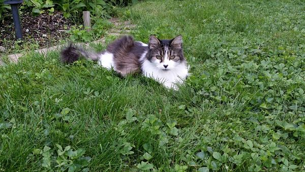
For this task, I used the clone stamp tool in Gimp. I basically cloned sections of the grass and 'painted' over the cat with them. I used this tutorial to understand what I needed to do.
Image 2: Remove subject from background using 'averaging' [Original/Edited]
Incomplete. I couldn't get any photos of things to 'average' out. I tried finding some stock photos on the internet but there was nothing. I also only had my phone and was having trouble getting multiple shots perfectly still. I found this tutorial so I know how todo it. Just couldnt get any good subject matter. :(
Image 3: Composite Image [Original/Edited]
.jpg)
.png)
I combined two images together. One of the sunset I took while sailing this summer and I added a Starcraft 2 BattleCruiser :)
Image 4: Change HairColor [Original/Edited]
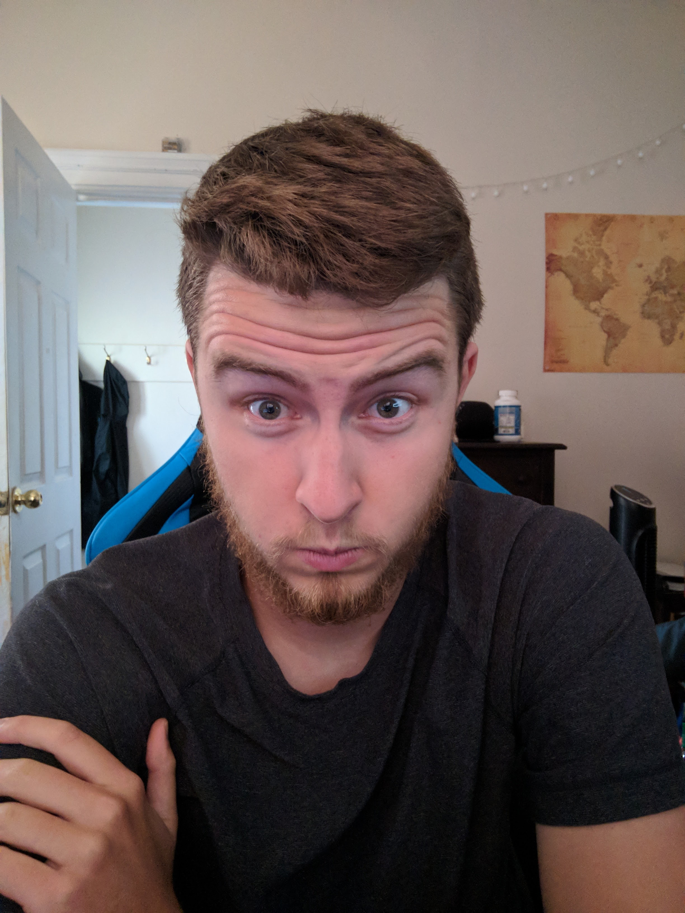
Used a transparency layer and painted overtop of my own hair. changing my haircolor to purple? Used this tutorial
Image 5: Swap Heads/Faces [Original/Edited]
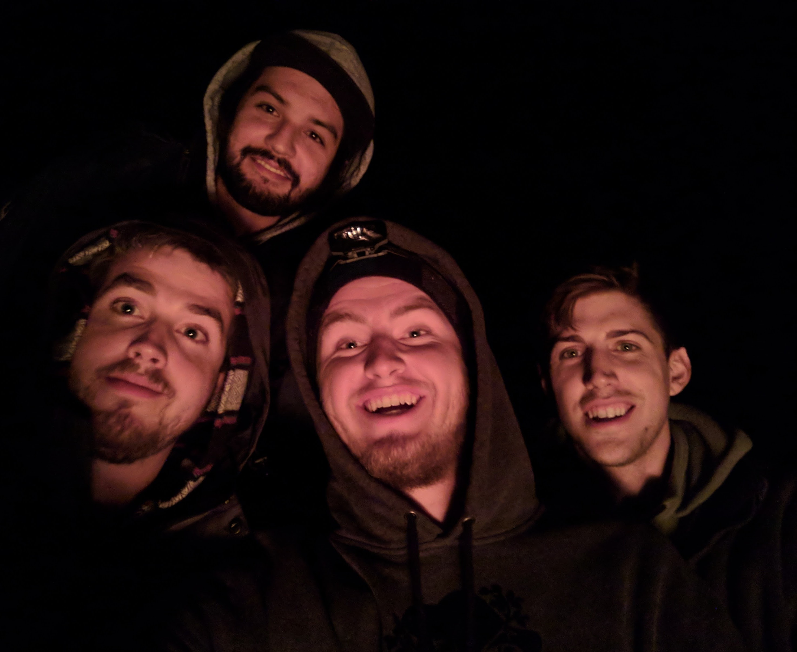 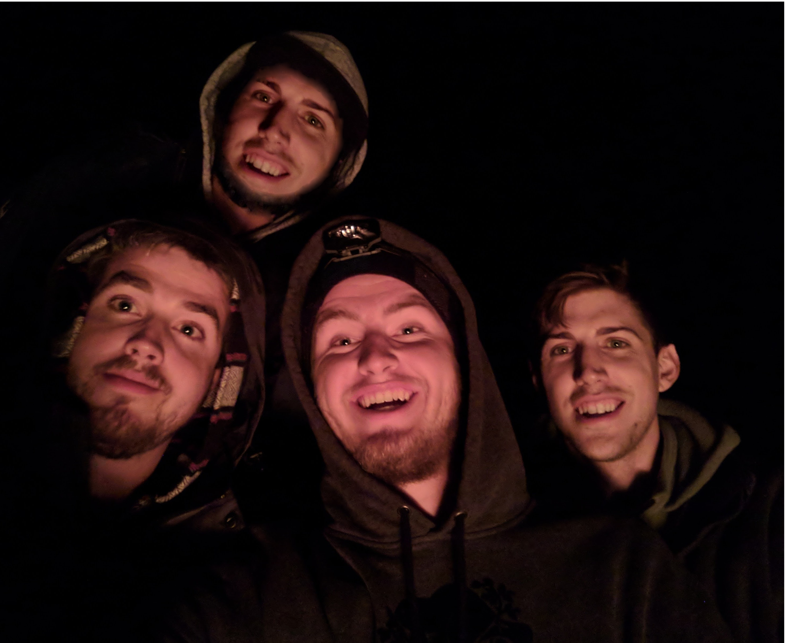I replaced one of my friend's faces with another friend in the same photo. I referenced this tutorial.
Image 6: Duck multiplication [Original/Edited]
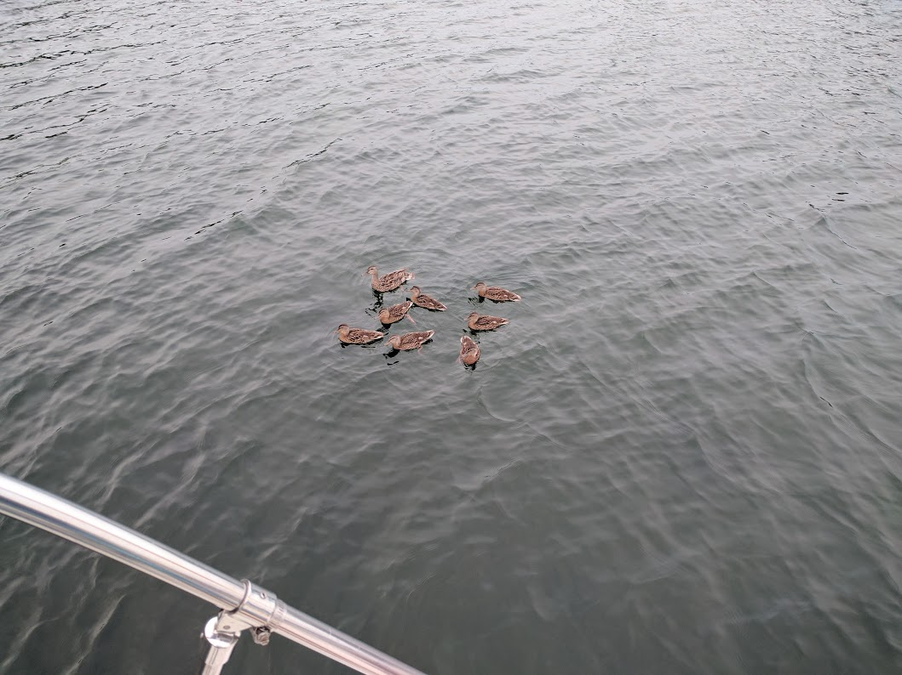 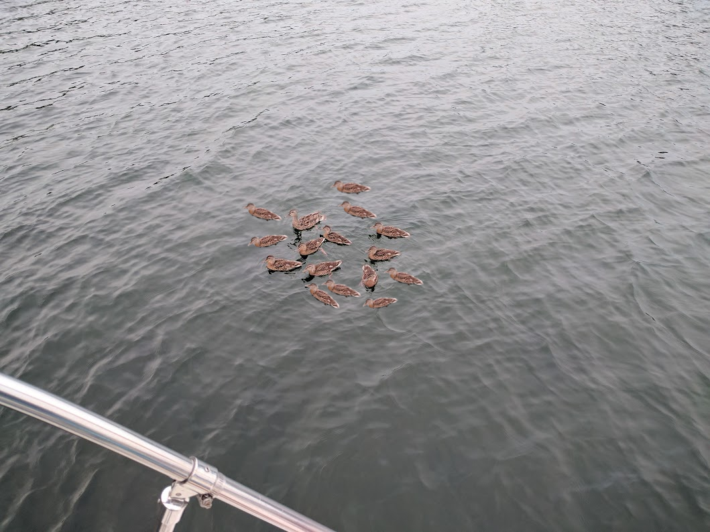Exactly what it looks like. I multiplied the ducks and tried to make it look as natural as possible.
Image 7: Touched up image removing imperfections [Original/Edited]
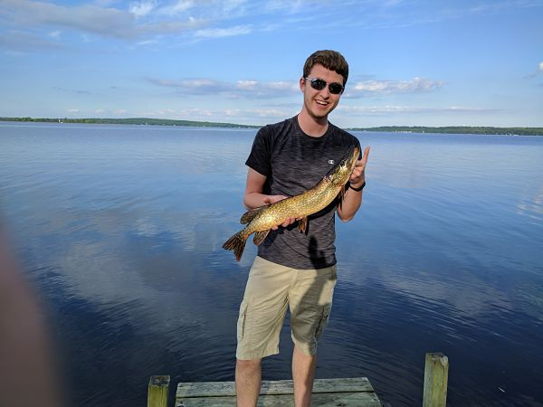
I touched up an image of me and a Pike. Removed blotched finger lower left. Removed face pimples. Removed shadow on shirt and leg (not my proudest job), removed items floating in water. Removed bloody gashes from fish.
Image 8: Vignette - Professional looking photo? [Original/Edited]
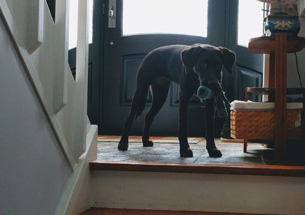 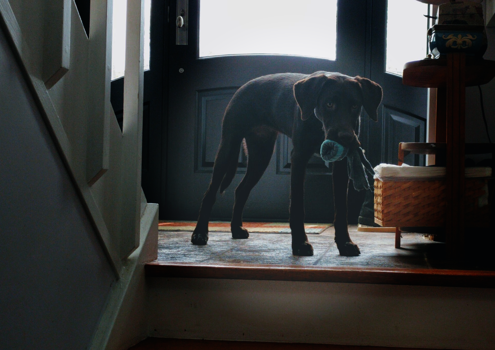I added a vignette to an image I took of my friends Chocolate Lab. I used this tutorial. Basically creating a layered mask, with an elipses and using a guassian blur effect to make the dog stand out more.
Image 8: Pull subject from photo and craft a new one with the subject [Original/Edited]
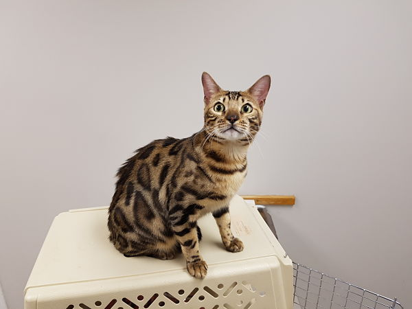
I took the teachers cat and created a new picture with him in it. I had to use the fuzzy tool in order to remove all the background and try and keep the cats fur looking realistic
Image 9: Cut out subject and add to different environment. Colorize to match environment. [Original/Edited]
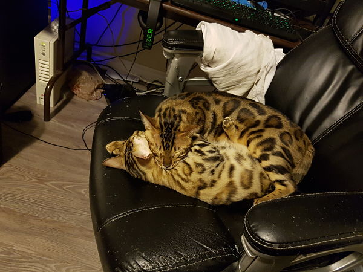
Took the two cats cuddling and put them into a nature photo I took. Tried to change their color to match the environment and make them look like large jungle cats
Image 10: Colorize a black and white photo [Original/Edited]


Colorized the rose from here. I did it mostly manually. Selecting the edges of the rose with the lasso tool, then filling in with the pink color. Then finally going around the edge, using an eraser tool and paint tool to fill in any missed spots. I'm really proud of this one.